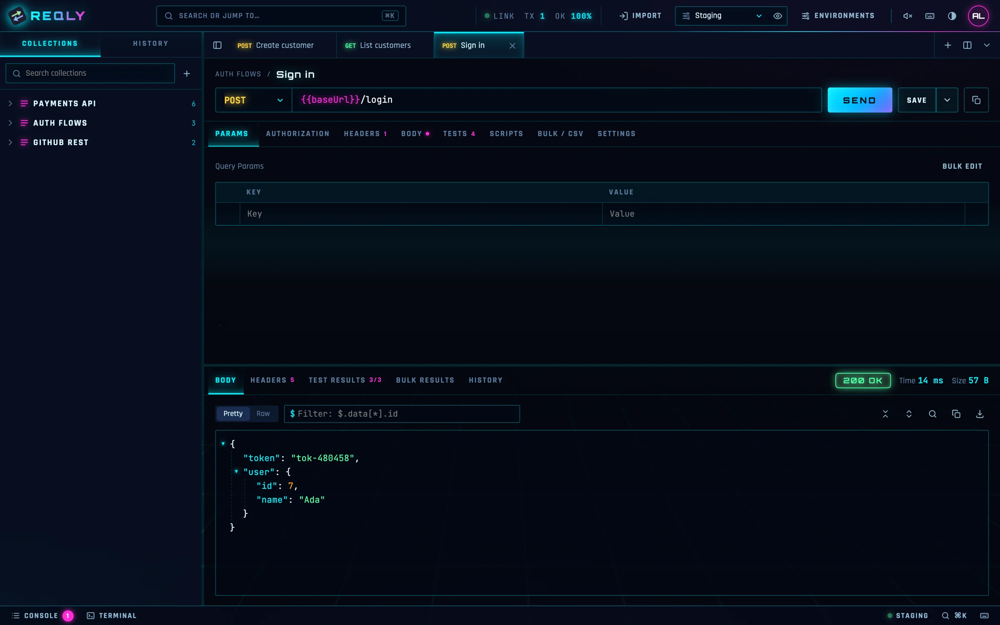
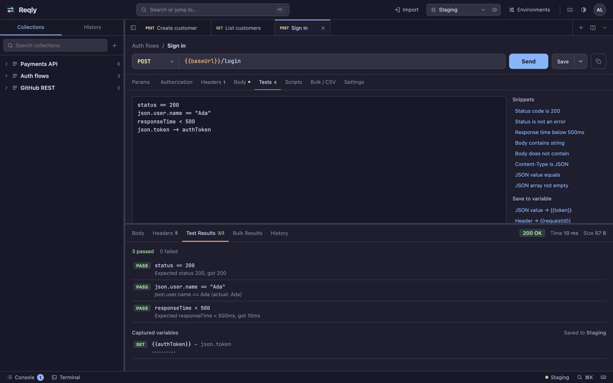
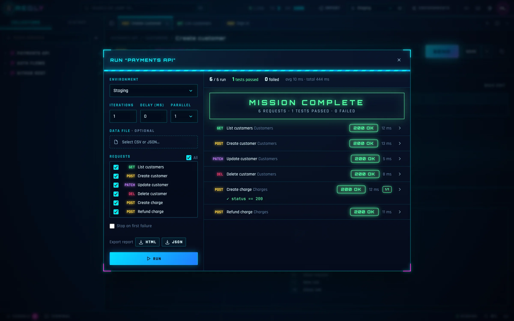
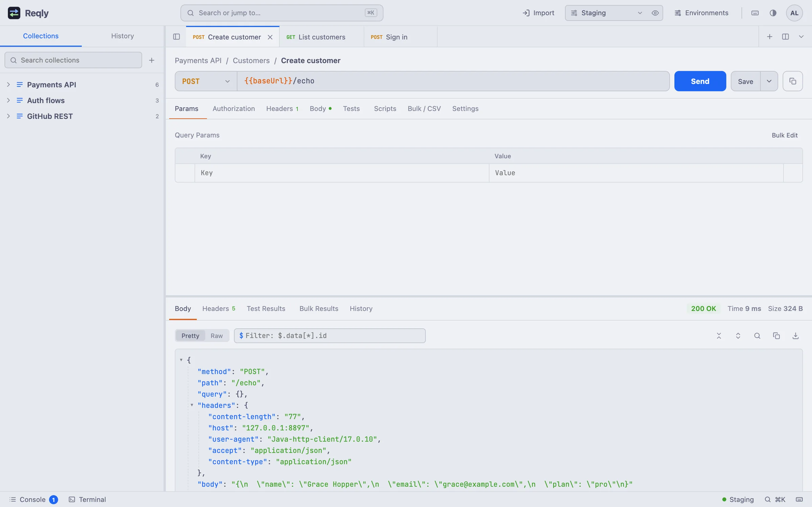

The API client that stays on your machine
Design requests, test responses and automate whole collections in a fast native app. Your collections, tokens and responses never leave your laptop.
Free for personal usemacOS 12 or laterNo sign-up in the cloud

- Secrets encrypted with AES-256
- Works fully offline
- No analytics, no tracking
- Imports Postman and cURL
One app for the whole API workflow
From the first request to a full regression run, Reqly covers what you reach for every day, without the bloat.
Requests & collections
Every method and body type: JSON, form, multipart with files and GraphQL. Organise work in nested folders and tabs.
Environments & variables
Switch between staging and production in one click. {{variables}} are highlighted, previewed on hover and secrets stay masked.
Tests in one line
Write status == 200 or json.user.name == "Ada" and you are done. Capture values into variables to chain requests.
Postman-style scripts
Pre-request and post-response JavaScript with the familiar pm API and console.log, run in a locked-down sandbox.
Collection runner
Run a whole folder with iterations, CSV or JSON data files and parallel requests. Export the report as HTML or JSON.
Powerful response viewer
Collapsible JSON tree that keeps big numbers exact, JSONPath filters, search, HTML preview and a diff of past responses.
Built for how testers actually work
Three themes, a command terminal, a console and keyboard shortcuts for everything.
Assertions without boilerplate
Plain one-line checks for status, headers, JSON values and response time, with clear pass and fail messages.
- Snippets for the checks you write most
- Capture tokens straight into your environment
- Secret values stay masked in results

Run entire collections
Pick an environment, a data file and how many requests to run in parallel, then watch every result arrive.
- Iterations with CSV or JSON test data
- Stop on first failure, or run everything
- Shareable HTML and JSON reports

Read responses faster
Pretty, raw and preview modes, a JSON tree you can fold, and JSONPath filters like $.data[*].id.
- Light, dark and sci-fi themes
- Search inside large bodies
- Compare any two past responses

Your API keys never leave your laptop
Cloud-first API tools sync your workspaces, tokens and responses to someone else's servers. Reqly does the opposite: everything is stored in a local database on your Mac.
- Environment values, auth settings and headers encrypted at rest
- Only reachable from your own computer, protected by your account
- Automatic local backups, and one-click export whenever you want
- No telemetry, ads or third-party scripts in the app
Switch over in minutes
Import Postman collections and cURL commands, export them again any time, and copy any request as code for cURL, JavaScript, Python or Java.
- Postman collection import and export
- Paste a cURL command to create a request
- Full workspace backup and restore
Fast to learn, pleasant to use every day
Frequently asked
Is Reqly free?
Yes. Reqly is free for personal use, learning and evaluation. Professionals and companies using it for work can buy a Pro or Team license, see Pricing.
Where is my data stored?
On your Mac, in the reqly-data folder in your home directory. Reqly has no servers that receive your requests, collections or responses. Sensitive values are encrypted with a key that only exists on your device.
Do I need an internet connection?
Only to reach the APIs you test. Reqly itself works fully offline, including against services on localhost or your company network.
Can I import my Postman collections?
Yes. Import Postman collection files (v2.1) from the Import menu, or paste any cURL command. You can export back to Postman format at any time.
Which platforms are supported?
Reqly 1.0.0 runs on macOS 12 or later. Windows and Linux apps are on the roadmap; until then you can run Reqly from source with Java 17 on any system.
How do updates work?
New versions are published on the releases page. Download the new version and replace the app in Applications; your data stays where it is.
Start testing in under a minute
Download Reqly, create your local account and send your first request. No credit card, no cloud sign-up.